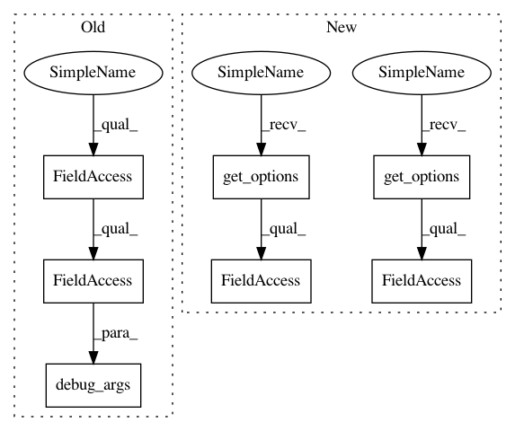

8acc7103622ad8c306deb774d827d6a7f4a9435f,src/python/pants/backend/jvm/tasks/specs_run.py,SpecsRun,__init__,#SpecsRun#,43
Before Change
if self.context.options.specs_run_jvm_options:
self._jvm_options.extend(self.context.options.specs_run_jvm_options)
if self.context.options.specs_run_debug:
self._jvm_options.extend(JvmDebugConfig.debug_args(self.context.config))
self.skip = self.context.options.specs_run_skip
self.color = self.context.options.specs_run_color
After Change
ini_key="bootstrap-tools",
default=["//:scala-specs-2.9.3"])
self.skip = self.get_options().skip
self.color = self.get_options().color
self.tests = self.get_options().test
def prepare(self, round_manager):
super(SpecsRun, self).prepare(round_manager)
In pattern: SUPERPATTERN
Frequency: 3
Non-data size: 7
Instances
Project Name: pantsbuild/pants
Commit Name: 8acc7103622ad8c306deb774d827d6a7f4a9435f
Time: 2014-10-22
Author: benjyw@gmail.com
File Name: src/python/pants/backend/jvm/tasks/specs_run.py
Class Name: SpecsRun
Method Name: __init__
Project Name: pantsbuild/pants
Commit Name: 1d38a245308c2941b9e4df92fdd61a11e08daa76
Time: 2015-03-16
Author: benjyw@gmail.com
File Name: src/python/pants/backend/jvm/tasks/jvm_task.py
Class Name: JvmTask
Method Name: __init__
Project Name: pantsbuild/pants
Commit Name: 8acc7103622ad8c306deb774d827d6a7f4a9435f
Time: 2014-10-22
Author: benjyw@gmail.com
File Name: src/python/pants/backend/jvm/tasks/benchmark_run.py
Class Name: BenchmarkRun
Method Name: __init__
Project Name: pantsbuild/pants
Commit Name: 8acc7103622ad8c306deb774d827d6a7f4a9435f
Time: 2014-10-22
Author: benjyw@gmail.com
File Name: src/python/pants/backend/jvm/tasks/specs_run.py
Class Name: SpecsRun
Method Name: __init__